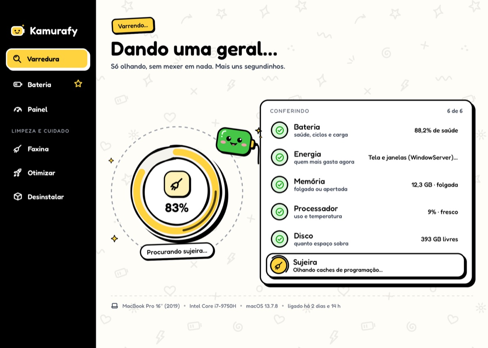
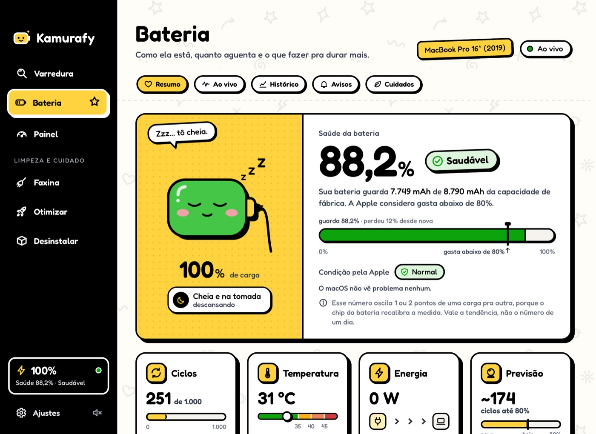
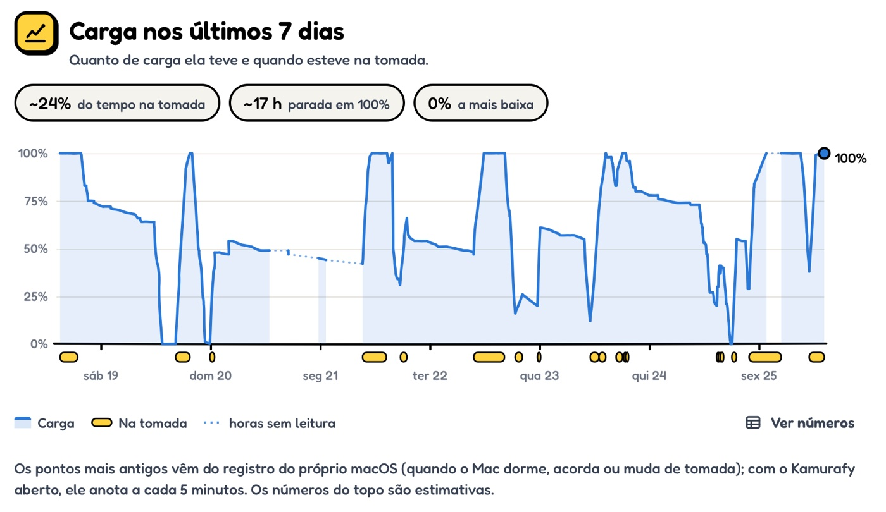
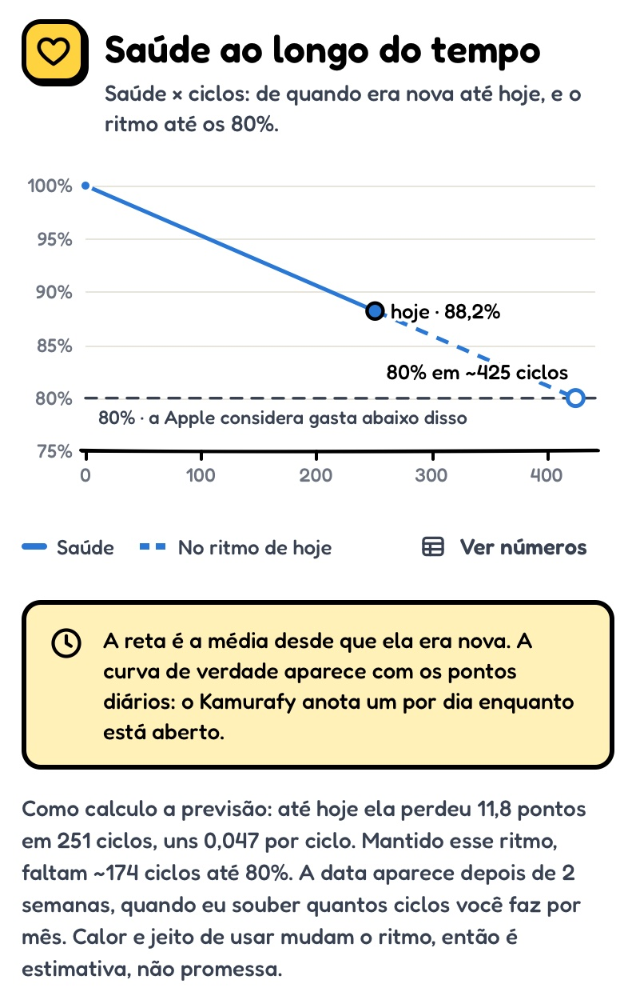
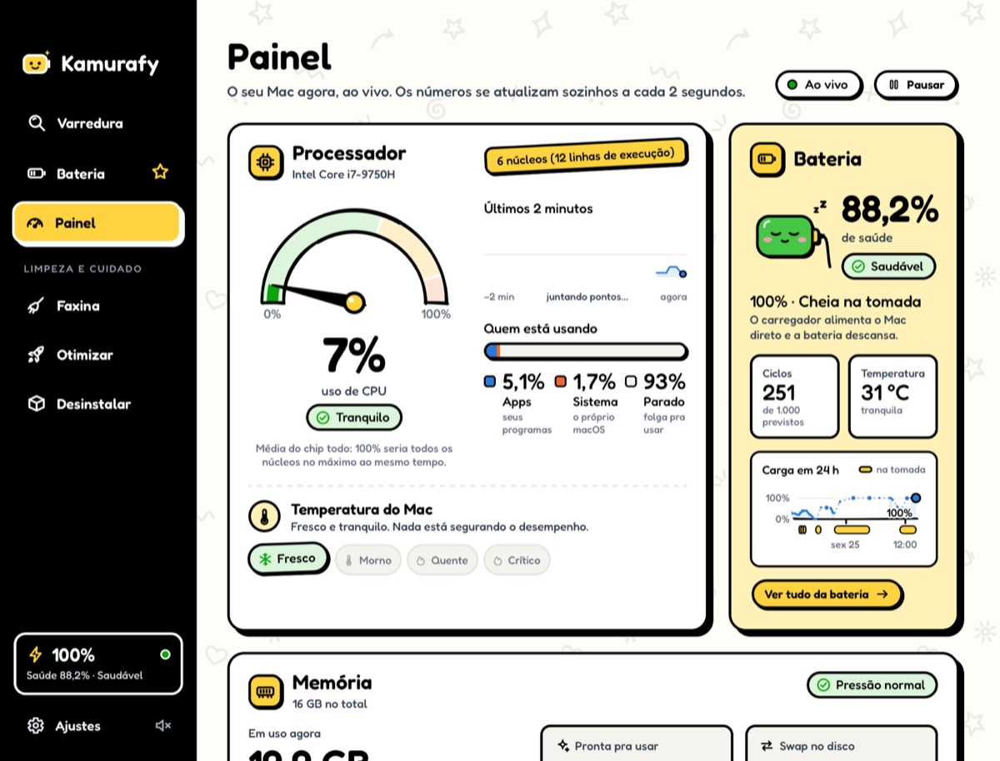
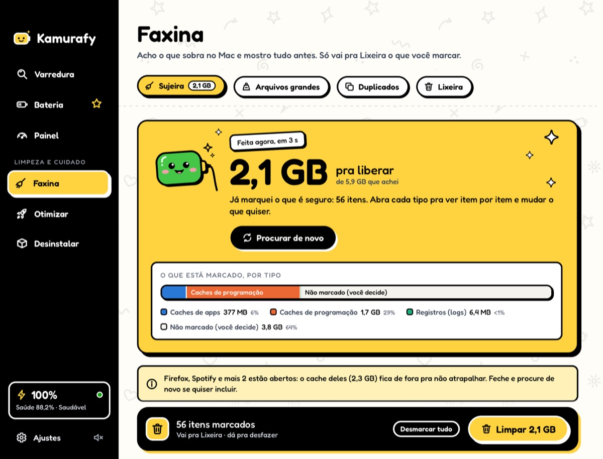
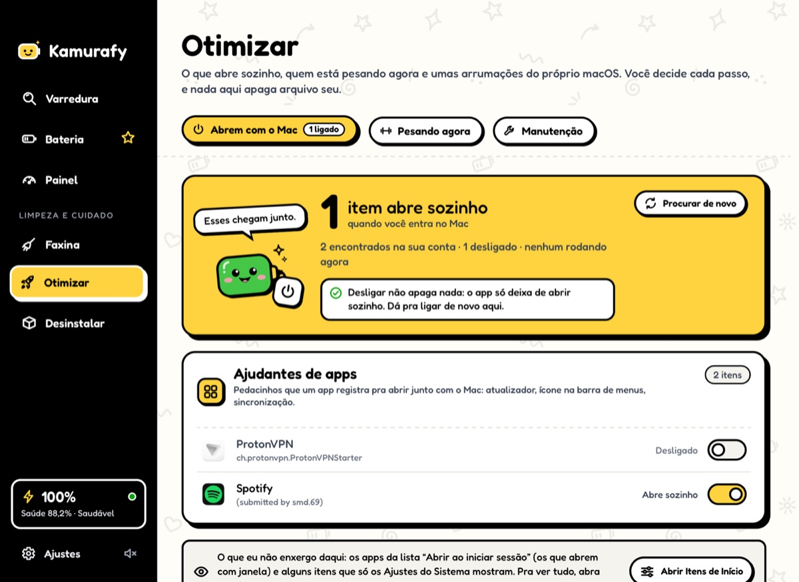
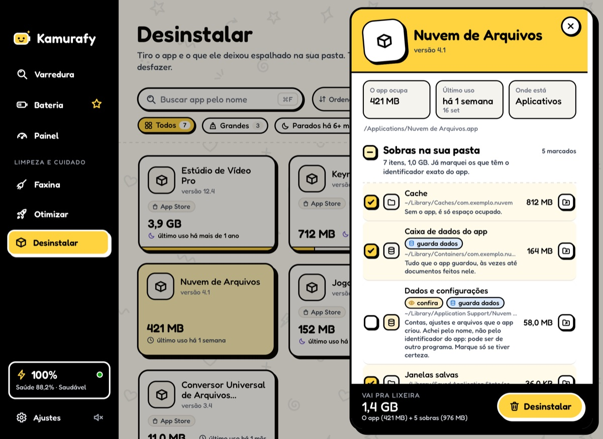

Varredura
Um botão e ele dá uma geral.
Confere bateria, energia, memória, processador, disco e sujeira de uma vez e diz o que dá pra fazer agora. Só olhando: nada é mexido sem você mandar.


Cuida do seu Mac e,
principalmente, da sua bateria.
Grátis, de código aberto, sem assinatura e sem mandar nada pra internet.
macOS 13 ou mais novo · Intel e Apple Silicon
Oi! Deixa a bateria comigo.

O Kamurafy lê o que o próprio macOS mede e traduz: quanto a bateria ainda aguenta, o que isso quer dizer e o que dá pra fazer pra ela durar mais.
Quanto da capacidade de fábrica ela ainda guarda, do jeito que o macOS mede. A Apple considera gasta abaixo de 80%.
Ciclos, temperatura, tensão de cada célula e os watts entrando e saindo, ao vivo.
Os apps que mais puxam bateria agora, com as abas e os ajudantes somados no app certo.
Um toque quando a carga chega no limite que você escolher e quando a bateria esquenta.
A carga dia a dia vem do registro que o próprio macOS guarda (quando o Mac dorme, acorda ou muda de tomada). Dá pra ver quanto tempo ela passou na tomada e parada em 100%, que, junto com o calor, é o que mais desgasta.

Com a saúde de hoje e os ciclos já feitos, o Kamurafy calcula o ritmo do desgaste e estima quantos ciclos faltam até 80%, o ponto em que a Apple considera a bateria gasta.
E fala com todas as letras: calor e jeito de usar mudam o ritmo, então é estimativa, não promessa.

Nada de botão mágico. Cada tela diz o que achou, o que isso quer dizer e deixa você decidir.
Confere bateria, energia, memória, processador, disco e sujeira de uma vez e diz o que dá pra fazer agora. Só olhando: nada é mexido sem você mandar.

Processador, memória, disco e bateria se atualizando sozinhos, cada número com a explicação do lado. Inclusive por que “liberar RAM” não ajuda: o macOS usa a memória que sobra de propósito, pra deixar as coisas à mão.

Caches de apps, caches de programação (npm, pip, Xcode…), registros, downloads esquecidos, arquivos grandes e duplicados. Você vê a lista, marca o que quiser e confirma.

Veja o que abre quando o Mac liga, quem está pesando agora e umas arrumações do próprio macOS (DNS, Spotlight, “Abrir com”). Você decide cada passo, e nada aqui apaga arquivo seu.

Arrastar um app pra Lixeira deixa pra trás cache, preferências e dados na sua pasta. O Kamurafy acha essas sobras e mostra uma por uma antes.

Um ícone na barra de menus mostra a carga e, num clique, um resumo: saúde, processador, memória, disco, quem mais gasta agora e atalhos pra escanear ou fazer faxina.
A Faxina foi feita pra nunca apagar o que não devia. Estas regras estão no código, e o código está aberto pra quem quiser conferir.
Nada sai sem você ver a lista e confirmar.
Dá pra desfazer com um clique. Apagar de vez só acontece se você mandar, com uma confirmação que avisa que não tem volta.
Só pastas conhecidas da sua pasta de usuário. Nada do sistema, sem senha de administrador, sem seguir atalhos pra fora.
Antes de mover, o app confere de novo se o arquivo é o mesmo da varredura e se continua no lugar permitido.
Downloads, arquivos grandes e duplicados ficam pra você decidir. Nos duplicados, sempre sobra uma cópia.
App aberto não tem o cache limpo. O Kamurafy pede pra fechar antes.
Sem conta, sem anúncio e sem mandar nada pra internet. Tudo o que ele lê (bateria, histórico, arquivos) fica no seu Mac, em ~/Library/Application Support/Kamurafy.
Está tudo no GitHub, sob a GPL-3.0. Dá pra ler, conferir cada regra desta lista e até compilar você mesmo, sem precisar do Xcode.
Ver o códigoPrecisa do macOS 13 (Ventura) ou mais novo. Funciona em Mac Intel e Apple Silicon.
Baixe o Kamurafy.dmg na última versão, abra e arraste o Kamurafy pra pasta Aplicativos:
KamurafyAplicativos
Na pasta Aplicativos, clique no Kamurafy com o botão direito e confirme:
botão direitoAbrirAbrir
O macOS pede essa confirmação uma vez só.
Lá não tem mais o atalho do botão direito. Abra o Kamurafy, feche o aviso e vá em:
Ajustes do SistemaPrivacidade e SegurançaAbrir Mesmo Assim
O botão fica na parte de Segurança, mais pra baixo.
Por que esse aviso? O Kamurafy ainda não é assinado com uma conta de desenvolvedor da Apple, então o macOS não tem como saber quem fez o app e pede que você confirme. É o aviso de sempre pra apps de fora da App Store sem essa assinatura. Se preferir, dá pra ler o código ou compilar você mesmo.
Grátis, sem conta e sem anúncio. Nada sai do seu Mac.
macOS 13 ou mais novo · Intel e Apple Silicon